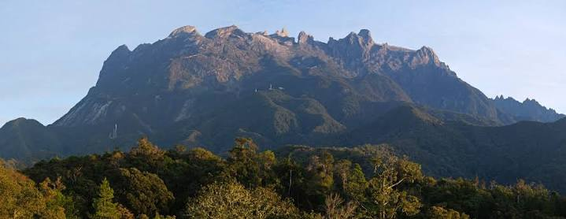

The Land Below the Wind Awaits You
Standing majestically at 4,095 meters (13,435 feet) above sea level, Mount Kinabalu is not only the highest mountain in Malaysia but also one of the highest peaks in Southeast Asia. This UNESCO World Heritage Site is the crown jewel of Kinabalu Park and a bucket-list destination for trekkers and nature enthusiasts from around the world.

The name "Kinabalu" is believed to come from the Kadazan-Dusun words "Aki Nabalu," meaning "the revered place of the dead." The mountain holds deep spiritual significance for local indigenous communities, who believe it is the resting place of their ancestors' spirits.
Beyond its cultural importance, Mount Kinabalu is a geological wonder. Formed approximately 10 million years ago, the mountain continues to rise at a rate of about 5mm per year. Its dramatic granite peak, exposed by glacial erosion during the last ice age, creates a stunning silhouette against the Borneo sky.
| Detail | Information |
|---|---|
| Trail Distance | 8.72 km one way to summit |
| Duration | 2 days, 1 night (standard) |
| Difficulty Level | Moderate to challenging |
| Best Time to Climb | March to August (dry season) |
| Permit Required | Yes (book in advance, limited daily slots) |
| Guide Required | Yes, mandatory mountain guide |
| Minimum Age | 10 years old |
| Accommodation | Panalaban Base Camp (3,272m) |
Kinabalu Park is a botanical paradise. As you ascend, you'll pass through distinct vegetation zones, each with its own unique plant communities. The mountain is famous for its pitcher plants, rhododendrons, and the world's largest flower, the Rafflesia, which can grow up to one meter in diameter.
Mount Kinabalu has more plant species than the entire continent of North America and Europe combined! Many species are endemic, meaning they are found nowhere else on Earth.
Watch this inspiring video of the Mount Kinabalu summit experience
Contact us for booking assistance and personalized climbing packages.